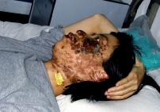

Mọi người nên hết sức lưu ý về Pháp Luân Công
Bài của Chung Ngôn (Zhong Yan)
[MINH HUỆ 22-9-2005]
Cái gọi là “vấn đề” Pháp Luân Công tại Trung Quốc thật ra không phải là Pháp Luân Công có vấn đề. Nó đã được tạo ra bởi một nhóm người trong chính quyền vì họ không coi trọng tự do tín ngưỡng, từ chối nhìn nhận ảnh hưởng vô cùng tốt đẹp của Pháp Luân Công đối với xã hội, và họ đã đánh giá quá nhẹ sự kiên trì của các học viên Pháp Luân Công trong việc giữ vững đức tin của họ. Chế độ đã dùng đến những phương pháp cực đoan, dùng đến guồng máy tuyên truyền toàn quốc, và dùng độc tài với ý định “tiêu trừ” Pháp Luân Công. Họ tạo ra những sự lừa gạt như là dàn cảnh “vụ tự thiêu Thiên an Môn” để gạt dân chúng Trung Quốc, và dùng một chính sách diệt chủng đối với Pháp Luân Công; họ đã tạo ra vô lượng thảm cảnh cho dân chúng Trung Quốc và ngược lại đã ảnh hưởng cả đến cái trật tự xã hội và chính cái tương lai chính trị của chính họ.
Các học viên Pháp Luân Công khắp thế giới đã lưu ý đặc biệt về tình hình Trung Quốc. Trong bao nhiêu trường hợp bị khủng bố, trường hợp cô Cao Dung Dung đã được biết đến rất nhiều. Cô Cao chết đi vì bị khủng bố ngày 16 tháng sáu 2005. Sau khi cô qua đời, các học viên Pháp Luân Công trên hơn 70 nước phản kháng trước các toà đại sứ và toà lãnh sự Trung Quốc. Những con người chân chính trên nhiều nước đã công khai lên án các tên khủng bố trong nhiều cơ hội khác nhau. Sự đau khổ của cô Cao Dung Dung trong những năm gần đây là chứng cớ cho thấy sự thất bại của Đảng Cộng sản Trung Quốc (ĐCSTQ) trong cuộc khủng bố từ sáu năm qua. Chúng tôi hy vọng rằng chư vị sẽ có được một sự hiểu biết thâm sâu hơn qua trường hợp này về cuộc khủng bố đức tin của các học viên Pháp Luân Công.
Ngày nay trong xã hội Trung Quốc có rất nhiều thứ tranh chấp rắc rối, và nhiều vấn đề rất nhạy cảm và đặc biệt. Toàn xã hội đã trở thành rất bất ổn. Mọi người trong chế độ đang nghiên cứu các vấn đề xã hội của Trung Quốc và cố tìm một lối thoát cho chính mình. Như mọi người đều biết, phần đông dân chúng trong chế độ đều không hay biết về vấn đề Pháp Luân Công khi xem xét tình hình chính trị. Hơn nữa, họ cũng không biết có sự kiện rằng có rất nhiều người trong chế độ đang cố tình che đậy các tội ác của họ để trốn tránh trách nhiệm, như vậy rất khó cho nhiều viên chức Trung Quốc nắm vững được hoàn toàn tình thế. Có người nghĩ rằng chính quyền Trung Quốc đã “chiến thắng xong” Pháp Luân Công, và Pháp Luân Công đang biến mất dần và không còn là một vấn đề to tác nữa. Có người nghĩ rằng Pháp Luân Công đã bị giải quyết tận cùng, và bây giờ Pháp Luân Công đã biến mất đến độ không còn là một vấn đề cần nên chú ý nữa. Cũng có nhiều người giữ cứng quan điểm và sự hiểu biết của họ. Nhưng chúng tôi xin nói, “Chư vị phải lưu ý đặc biệt về cái ‘vấn đề’ Pháp Luân Công, vì Trung Quốc đã bị tiêu huỷ trong hành trình khủng bố Pháp Luân Công của nó, và từ nơi gốc độ này, tương lai của Trung Quốc đang trong một cuộc khủng hoảng nghiêm trọng.
(Các sự kiện sau đây được ghi lại từ lời tuyên bố và sống thật của Cô Cao Dung Dung, được chép lại từ nơi băng thâu hình)
“Tang Yubao tra tấn tôi với các các cùi điện cho đến 9 giờ tối. Trong sáu bảy giờ tra tấn, tôi vô cùng đau đớn và kinh hãi. Tang Yubao không ngừng châm điện cho giựt mặt tôi, lỗ tai và cổ tôi với hai cùi điện trong một thời gian dài. Cơ thể tôi bị điện giựt co quắp lại và bắn lên va vào óng sưởi. Dấu thẹo trên cườm tay tôi vì bị còng vẫn còn được thấy rõ cho đến hôm nay, và hai cánh tay tôi bị cứng đơ trong hơn hai tháng sau đấy. Hai mắt tôi bị khô và hai chân mày tôi bị rụng mất sau khi Tang Yubao châm điện vào trong tròng mắt tôi. Da quanh lỗ tai và miệng tôi bị tróc ra.
Tên cai tù Zeng Xiaoping đi vào và cầm một tấm kiếng nhỏ đưa ra trước mặt tôi. Y nói rằng tôi chỉ có thể tự trách mình cho sự huỷ hoại nhan sắc này. Gương mặt tôi, lỗ tai tôi, cổ, lưng, cùi chỏ và các nơi khác trên mình tôi đều bị cây cùi điện cao thế châm giựt nhiều lần. Da tôi bị phòng lên và trở thành đen. Mặt tôi sưng húp gần hai tấc và bị méo mó nặng nề. Mắt tôi khó mở ra được và một chất vàng trào ra không ngừng từ nơi mặt tôi. Tóc tôi bị dín vào mặt và lỗ tai tôi, và các chỗ phòng lên nơi cổ tôi to bằng ngón tay cái của tôi. Tôi cảm thấy rằng tôi thà chết hơn là sống khi cây cùi điện châm vào những nơi đã bị thương trên thân của tôi.”
Cô học viên Pháp Luân Công Cao Dung Dung làm việc cho đơn vị Lý tài tại Đại học Mỹ thuật Luxun Thẩm Dương

Cô Cao Dung Dung bị phá huỷ nhan sắc trầm trọng bằng những cùi điện (Ảnh này được chụp ngày 17 tháng năm 2004, mười ngày sau khi cô bị tra tấn)
Cô Cao Dung Dung , sinh tháng hai 1968, làm việc cho đơn vị kế toán của Đại học Mỹ thuật Luxun, và sau này trở thành nhân viên lý tài. Cha mẹ cô đã về hưu. Người anh lớn của cô là một giám đốc dân biểu của bộ giáo dục tại Quang Minh Thời báo. Hai người chị của cô cũng học và làm việc tại Đại học Mỹ thuật Luxun.
Cô Cao Dung Dung bắt đầu tập luyện Pháp Luân Công năm 1996, và sau đó trở thành một người trợ đạo tình nguyện. Cũng như nhiều học viên Pháp Luân Công, cô đi Bắc Kinh sau khi 20 tháng bảy 1999. Cô bị bắt một cách bất hợp pháp và bị giam cầm ba lần, và sở làm của cô phải chi gần 200,000 yuan để tìm cô. Tháng năm 2000, cô bị kêu án ba năm tù lao động cưỡng bách, và sau đó bị gữi đi Trại lao động cưỡng bách Mã Tam Gia tại tỉnh Liễu ninh.
Trong trại lao động cưỡng bách, cô bị “chuyển hoá” và trở thành một “cộng tác viên” hành động để gây rối loạn cho các học viên khác. Vì vậy, cô nhận được sự gia giảm và được thả ra sớm hơn vào tháng giêng 2001. Sau vụ “tự thiêu” cho đến tháng Năm 2003, Cô Cao Dung Dung không tập luyện Pháp Luân Công, nhưng trong thời gian đó, cô đầy nghi vấn và mất tự tin.
Công chúng Trung Quốc không hiểu rằng Pháp Luân Công là một đức tin trang trọng - đức tin nơi chân lý của vũ trụ, và là một khi đức tin này đã được lập thành, ý nghĩa của nó là có liên hệ trực tiếp với sự sống của một con người. Cấm đoán một người đức tin của họ là cũng giống như cấm người đó sự sống. Điều mà những kẻ khủng bố muốn chỉ giản dị là khi một người học viên đã bị “chuyển hoá” thì họ sẽ hoàn toàn buông bỏ đức tin của họ. Đối với họ, điều này chứng tỏ một sự chiến thắng, và chứng thực rằng cuộc khủng bố bạo tàn là đúng. Điều mà những kẻ khủng bố không biết đó là những người bị khủng bố sẽ tái hồi lại đức tin bị khủng bố của họ và cả trở thành mạnh mẻ hơn do vì bản năng căn bản của họ hướng về sự sống, tinh thần và tâm linh. Tuyên bố rằng đã ‘chiến thắng hoàn toàn’ trong việc khủng bố Pháp Luân Công là một thảm kịch cho Trung Quốc và cho giống nòi Trung Quốc. Sự ‘chiến thắng’ này có thể hoàn toàn bị lật ngược bởi sức mạnh của đức tin tinh thần và sự sống. Đó là một luật tinh thần mà không thể bị thay đổi bởi ý muốn của con người. Điều đó đã được chứng minh qua lịch sử.
“Trong ba năm mà tôi buông bỏ Chân Thiện Nhẫn, tôi mất đi cái ý nghĩa chân thật của cuộc đời, và đau khổ vì mất tinh thần và lo lắng. Một chút xíu lương tri và thiện lành còn lại trong tôi đã khiến cho tôi ước muốn rằng tôi còn có thể tìm được sự hướng dẫn để làm một con người tốt. Tôi nhận thấy rằng Chân Thiện Nhẫn vẫn còn ầm ỉ trong tiềm thức tôi, và tôi không ngừng ý thức được cái nguyên lý của vũ trụ rằng tốt và xấu sẽ có báo ứng. Sau một thời gian dài trong bấn loạn và đấu tranh nội tại, tôi cuối cùng hiểu rằng đời tôi không thể thiếu Chân Thiện Nhẫn. Đến cuối tháng năm 2003, tôi bắt đầu thức tỉnh và tôi cương quyết tu luyện lại Pháp Luân Công.”
Không ai buộc Cô Cao Dung Dung làm như vậy. Với trắc trở to lớn trong nội tâm, cô lại chọn lại Pháp Luân Công. Sự chọn lựa này của cô cũng là sự chọn lựa của hằng chục ngàn người học viên Pháp Luân Công mà có sự kinh nghiệm tương tự. Những kẻ khủng bố đã không tìm được một phương pháp để tiêu trừ Pháp Luân Công trong sáu năm qua. Thay vì vậy, họ chỉ có chứng cớ rằng tất cả những phương pháp của họ đều thất bại. Họ không tìm được một lý thuyết nào chứng minh rằng Pháp Luân Công là không tốt và để có thể thay thế đức tin của dân chúng. Cho những ai mà lo lắng cho số phận của đất nước và tương lai của quốc gia, chúng tôi muốn nói rằng, “Hỡii những kẻ khủng bố, chư vị xài phí một cách vô trách nhiệm những số lượng lớn nhân lực, tài nguyên của quốc gia để khủng bố học viên Pháp Luân Công, mà chỉ có đem lại lợi ích cho xã hội và không một chút có hại. Cuộc khủng bố này để làm gì, và chư vị thật ra đang nghĩ gì?”
Tháng sáu 2003, khi cô Cao Dung Dung kêu các học viên nơi sở làm của cô nên tập luyện kiên trì Pháp Luân Công, cô bị kêu án ba năm lao động cưỡng bách. Dưới cái môi trường độc tài tại Trại lao động cưỡng bách Long Sơn tại Thẩm Dương, cô lại gặp sự trăn trở nơi đức tin của cô, bị tra tấn, và làm những việc lao động nô lệ cùng với những học viên khác mà từ chối sự ‘chuyển hoá’.
Vì thái độ cương quyết của Cô về Pháp Luân công, cô bị tra tấn tàn bạo ngày 7 tháng năm 2004. Li Fengshi, giám đốc của trại lao động cưỡng bách đã một lần nói, “Các tổ chức độc tài có thể làm gì à? Còng tay và châm cùi điện có thể làm gì à? Tôi không tin rằng chúng tôi không thể kềm chế cô, cô bé Cao Dung Dung ơi.” Cai tù không ngừng châm bốn cùi điện giựt cô trong sáu bảy giờ đồng hồ, mà cả một người to lớn khoẻ mạnh cũng không thể chịu nổi, nói chi một cô gái ốm yếu cao không hơn một thướt năm. Với một ý chí mạnh mẻ, cô đã từ chối hợp tác. Dưới sự kinh hoàng và đau đớn không thể tưởng tượng, và trong khi các cai tù không có mặt, cô đã nhìn thấy một giây hy vọng từ nơi cửa sổ không đóng nơi tầng lầu thứ hai và đã nhảy qua đó. Không may thay, cơ thể yếu đuối của cô không chịu nổi cuộc nhảy thoát này, và cô bị thương nơi đôi chân và nơi hông. Dĩ nhiên, trại lao động cưỡng bách Long Sơn, và đơn vị công tác phụ trách, hoàn toàn phủ nhận rằng các vết thương của cô là kết quả của sự khủng bố tàn bạo mà họ đã áp đặt lên cô.
Theo sự hiểu biết sâu xa của chúng tôi đạt được qua nhiều năm nay, sự đau đớn thể chất không có nghĩa gì nhiều đối với một học viên Pháp Luân Công. Điều quan trọng là có được sự tự do để tập luyện Pháp Luân Công, và để cho mỗi người Trung Quốc hiểu được đúng đắn Pháp Luân Công và cũng có được sự tự do tập luyện Pháp Luân Công. Đó là cái khoá để hiểu được điều gì các học viên Pháp Luân Công nghĩ và hành động trong những năm qua. Cô Cao Dung Dung rất muốn được tự do. Khi cô nằm trong nhà thương, cô nói với một người thân, “Tôi thật hy vọng rằng tôi có thể lại học Pháp, tập Công và đi giảng thanh chân tượng như các học viên bên ngoài.” Cho dù cô bị canh giữ bởi hơn mười viên chức cảnh sát tại nhà thương, Cô Cao Dung Dung cảm thấy rằng tự do rất gần kề. Cô muốn rời nhà thương, nhưng trại lao động và văn phòng luật pháp sợ rằng các việc làm xấu của họ sẽ bị phơi bày, nên họ từ chối yêu cầu của cô Cao Dung Dung.
Các học viên Pháp Luân Công giúp cô Cao Dung Dung được tự do. Ngày 5 tháng mười 2004, Cô Cao được cứu thoát và đạt được sự tự do trong một thời gian. Qua một giai đoạn bình yên học Pháp và tập Công, Cô Cao Dung Dung được bình phục. Nhưng, sự biến mất của cô trở thành một vấn đề lớn cho chính quyền. Họ gọi nó là “Trường hợp lớn ngày 10.5” lúc ban đầu, và sau này trở thành là “Trường hợp lớn số 26.” (Rõ ràng là nó được đặt tên theo văn phòng số 26 của Bộ Công an – cái văn phòng phụ trách giải quyết Pháp Luân Công). Sở phụ trách nơi Thành phố Thẩm Dương đã phát hành một thông tri mục đích tiếp ứng sự điều tra về trường hợp cô Cao. Họ không ngừng dùng các đài truyền tin để góp nhặt tin tức, và dùng một số lượng to lớn tài nguyên nhân lực để tìm kiếm cô Cao.
Tờ “thông tri tra cứu” do văn phòng luật pháp thành phố Thẩm Dương phát hành đã phơi bày các tội ác phá huỷ nhan sắc và các tội khác đã phạm phải trong trại lao động.
Tại sao một số nhân vật có quyền hành lại đi sợ một người dân thường như cô Cao Dung Dung nhiều như vậy? đó là vì cô ta là chứng cớ cho thấy sự thất bại tuyệt đối của cuộc khủng bố Pháp Luân Công. Cô ta đã một lần bị bắt buộc rời bỏ đức tin của cô. Nhưng ba năm sau này, dưới sự suy nghĩ cặn kẻ hơn, cũng như nhiều học viên khác, cô đã cương quyết chọn sự tu luyện kiên trì Pháp Luân Công lại. Điều làm cho một số người càng kinh hãi hơn đó là chứng cớ của cô Cao Dung Dung bị châm điện - bức hình gương mặt bị phá huỷ của cô - đã được truyền bá đi rộng rãi trên thế giới.
Tháng ba 2005, Cô Cao Dung Dung bị bắt lại và bị mất tự do. Ngày 8 tháng sáu, cô Cao bị gữi đi Y viện Đại học y khoa Trung Quốc. Ngày 16 tháng sáu, cô Cao Dung Dung đẹp đẽ đã vĩnh viễn rời thế giới này.
Sự thật của cái gọi là ‘chiến thắng’ trong việc khủng bố Pháp Luân Công, nó to lớn như thế nào, và sự tà độc của nó như thế nào? Ở cấp bực tối cao của giới chính trị, họ có giữ kín tất cả những chứng cớ về ‘vụ tự thiêu Thiên An Môn’ giả dối. Trước kỳ Họp đảng thứ 16, một cựu viên chức ĐCSTQ đã cho đăng nặc danh ở ngoại quốc một quyển sách tựa đề là ‘sự lừa dối độc hại’ (bằng Hán ngữ và Anh ngữ). Từ gốc độ của một người trong nội bộ, nó đã diễn tả rất chi tiết cái lý do và các chiến dịch khủng bố. Tác giả nói, “Tôi có thể nói với chư vị một cách rõ ràng và thẳng thắng là ‘những người mà gọi là nạn nhân’ của ‘vụ tự thiêu’ là không phải học viên Pháp Luân Công. Tôi biết họ là ai, vì sao họ được chọn, những lợi ích gì họ nhận được và dưới hình thức nào.’’ Trong dân chúng trong và ngoài Trung Quốc, cũng có những chứng cớ mạnh mẽ rằng vụ tự thiêu này là được dàn cảnh.
Có các viên chức có công tâm đã tổ chức một hệ thống lấy tin tức trong các nhà tù, các trại lao động cưỡng bách, và các Đại sứ quán và Lãnh sứ quán ở ngoại quốc để bí mật gom nhặt các chứng cớ về cuộc khủng bố Pháp Luân Công này. Những nhà chuyên môn về Phân khoa Khoa học Xã hội Trung Quốc đã đăng một tài liệu tựa đề là, “13 phương pháp tra tấn tại Trung Quốc” sau khi cuộc họp Đảng lần thứ 16, nhưng các phương pháp khủng bố các học viên Pháp Luân Công là nhiều hơn rất nhiều 13 phương pháp hành hình nói đó! Hơn nữa, tất cả các cuộc giết người và tra tấn hành hình đã được che đậy giỏi đến độ vô lượng số người không biết được sự thật và vẫn còn bị lừa dối bởi chế độ.
Sự thật, khi các người khủng bố bị rơi vào trong cái bẫy chết người chưa từng thấy trong cuộc khủng bố Pháp Luân Công năm 2000, họ đã biết rằng, nếu họ không thể chứng minh cuộc khủng bố cực đoan này là đúng, và nếu họ bị thất bại trong việc giết người hàng loạt, vậy ‘vấn đề’ Pháp Luân Công mà họ không thể buông bỏ này có nghĩa là họ có thể sẽ phải đối diện với những hậu quả là bị mang ra toà. Trên thực tế, ‘vấn đề’ Pháp Luân Công thật sự đã chiếm trọn hướng đi của tình trạng chính trị Trung Quốc trong nhiều năm nay, và điều này cũng là cái lý do căn bản đưa đến sự tan rã nhanh chóng không khí chính trị tại Trung Quốc.
Càng quan trọng hơn nữa là nếu tất cả những điều đó là sự thật, vậy đó sẽ là một điều chính trị tà ác nhất trong bao nhiêu phong trào mà ĐCSTQ đã khuấy động từ hơn năm mươi năm qua. Khi sự thật được phơi bày, chư vị sẽ cảm thấy thế nào? Đó cũng là một lý do quan trọng vì sao chúng tôi kêu gọi chư vị hãy lưu ý về cái ‘vấn đề’ Pháp Luân Công.
Hơn nữa, cách đối xử tồi tệ đối với Pháp Luân Công trong những năm gần đây qua việc xử dụng cái lực lượng quốc gia to lớn, bao gồm cả cái lực lượng dùng để tấn công đủ loại tội phạm, không những đã tạo ra những tổn thất nghiêm trọng cho trật tự xã hội, mà nó cũng tạo ra tổn thất nghiêm trọng bên trong chính chế độ. Cái gương mà nó đề ra cho tất cả các tầng lớp chính quyền là, độc tài này có nghĩa là người ta có thể dùng đủ mọi cách một cách vô trách nhiệm đối với các học viên vô tội Pháp Luân Công. Vậy các nhóm xã hội khác đều có thể bị đối xử y như vậy chăng? Điều này gia tăng sự đối nghịch xã hội và làm rắc rối thêm các vấn đề xã hội. Ở một số nơi, các va chạm bình thường trong các cộng đồng cả cũng bị đối xử y như đối với Pháp Luân Công, vì vậy các vấn đề trở thành càng mẫn cảm hơn và càng rắc rối hơn. Có thể nói rằng cái lý do gốc quan trọng của sự bất ổn cùng cực trong xã hội Trung Quốc là nằm nơi cách chính quyền đối đãi khủng bố Pháp Luân Công mà không kể gì đến hậu quả.
Quyển Chuyển Pháp Luân đã được dịch ra hơn 20 thứ tiếng. Pháp Luân Công được thành lập vững vàng trên 70 nước, và đã nhận được 1337 bằng ban khen và tuyên dương bên ngoài Trung Quốc (139 bản đề nghị của quốc hội ủng hộ), mang đến một sự công nhận tốt đẹp đối với văn hoá Trung Hoa. Mặt khác, trong khi tiếp tục đối xử với dân chúng bằng cách cai trị độc tài và đi ngược lại với chiều hướng quốc tế ủng hộ nhân quyền và tự do tín ngưỡng, Trung Quốc tự đặt mình trong một thế thụ động trong các việc quốc tế, không thể thực hiện lời hứa nằm trong các nghị định quốc tế. Gần đây, các lãnh đạo các nước Tây phương công khai áp lực lên Hồ Cẩm Đào để ngưng sự khủng bố Pháp Luân Công. Để cấm các hoạt động Pháp Luân Công tại Hồng Kông, Trung Quốc muốn thông qua bằng bạo lực Đạo luật 23, nhưng một triệu dân cư Hồng Kông đã xuống đường ngày 1 tháng bảy 2004 để phản đối, và Đạo luật 23 không thể thông qua. Dù sao, sự kiện này đã để lại một dấu tích đen trong nỗ lực của Trung Quốc đặt để “một quốc gia, hai hệ thống” đối với Đài Loan. Pháp Luân Công được công nhận tại Đài Loan, và số các học viên gia tăng mau chóng với thời gian. Nhật báo Nhân dân đã tiết lộ con số 300,000 học viên vào cuối 2004. Thái độ của hai bên bờ Vịnh là hoàn toàn khác bịệt nhau, và sự khác biệt nhau to lớn đến độ người ta không thể tránh nhìn ra ý nghĩa của sự khác biệt đó.
Luật pháp không bao giờ được đem ra áp dụng đối với cuộc khủng bố Pháp Luân Công. Nói cách khác, cuộc tiêu trừ Pháp Luân Công là hoàn toàn bất hợp pháp. Các tên khủng bố đã lập lên một Phòng 610 với những chi nhánh và tổ chức lệ thuộc khắp đất nước nhằm để đạt được mục đích của chúng là tiêu diệt Pháp Luân Công. Tổ chức này phụ trách vịệc khủng bố Pháp Luân Công, nó trực tiếp điều động bởi các viên chức cao cấp nhất của ĐCSTQ. Nó có quyền lực trên cả hiến pháp, luật pháp và chính phủ.
“Điều luật sáu,” phát hành bởi bộ Công an, và đăng ngày 22 tháng bảy 1999, lấy đi của các học viên Pháp Luân Công quyền khiếu nại và tự do ngôn luận của họ bảo đảm bởi Hiến Pháp Trung Quốc. Điều luật này bất hợp pháp và tượng trưng một sự sứt mẻ trên luật pháp. Nhưng nó lại cho phép những kẻ khủng bố gửi và kêu án hằng trăm ngàn người học viên Pháp Luân Công đi lao động cưỡng bách!
Sự đối đãi tàn tệ của chính phủ đối với Pháp Luân Công phải được giải quyết hầu Trung Quốc có thể thành lập và khai triển môt xã hội điều động bởi luật pháp. Nếu không giải quyết vấn đề này, trong khi không ngừng khủng bố bất hợp pháp Pháp Luân Công, công lý sẽ không thể tái hồi, và luật pháp chỉ như một trò đùa cho các chính trị gia chơi.
Trong một vài chục năm qua, dân chúng Trung Quốc đã không có một đức tin chân chính trong tâm nào cả. Trong khi xã hội Trung Quốc đang tiến về hướng kinh tế thị trường dưới một chính phủ độc tài, các thành viên của chế độ, đứng trước sự quyến rũ về quyền lực và lợi lộc, rất khó khăn tự kềm chế để không trở nên đồi truỵ. Người dân trung bình tự bên trong không có ước muốn trở nên người tốt, vì vậy đạo đức xuống dốc rất nhanh. Trào lưu sai lầm này đã làm nhiều người Trung Quốc không thể hiểu rằng phải có một đức tin. Môi trường tâm lý của xã hội trở thành căn bản quan trọng cho cuộc khủng bố Pháp Luân Công. Dân chúng trong cộng đồng, kể cả những người ở vị trí quyền thế, vẫn không hiểu vì sao người ta lại tin nơi các nguyên lý Chân Thiện Nhẫn, nên những người này bị khai báo như là ‘bị nhập’ hoặc ‘tinh thần có bệnh’ chỉ vì đức tin của họ. Kỳ thật, khi chư vị tìm hiểu Phật giáo hay Thiên chúa giáo, chư vị sẽ thấy rằng ý nghĩa và sức mạnh của đức tin của họ là giống nhau. Đó không phải là mê tín mù quáng.
Sự không ngừng tiêu trừ Pháp Luân Công đã đẩy nhanh đạo đức xã hội và môi trường tâm lý - cần thiết cho sự phát triển khoẻ mạnh xã hội Trung Quốc -đến bờ diệt vong. Đến hôm nay chính phủ vẫn bất kể vấn đề tự do tín ngưỡng mà xem đó như một cuộc khủng hoảng cho sự ổn định xã hội, và vẫn tuyên dương vô thần. Có thể nào sự bao che không ngừng các lỗi lầm đã thực thi trong cuộc khủng bố Pháp Luân Công và các tôn giáo khác là đường lối có trách nhiệm của Trung Quốc, giống nòi Trung Quốc và người dân Trung Quốc sao?!
Sự nhồi sọ của văn hoá đảng mà đã xảy ra từ hơn nhiều chục năm gần đây đã đưa dân chúng Trung Quốc đến chỗ nghĩ và nhận xét các vấn đề một cách không lành mạnh và vặn vẹo. Tại sao những kẻ khủng bố có thể xúc tiến và thực hiện một cuộc khủng bố điên rồ như vậy? Sự điên rồ này không thể nào tách lìa được với cái tâm lý xã hội bị méo mó mà văn hoá đảng đã nhồi nhét vào. Trước mặt quyền lực độc tài, cái tâm lý và lối nghĩ vặn vẹo này có thể dễ có tác dụng, dẫn đến thiện và ác, đúng và sai bị lật ngược.
Kết quả của văn hoá đảng sâu đậm này đã làm cho người Trung Quốc nghĩ suy về các vấn đề khách quan một cách vô cùng méo mó, và Trung Quốc không ngừng làm những lỗi lầm này đến lối lầm khác tạo nên những khốn nạn trầm trọng. Tại Trung Quốc, hiểu biết và đi theo sự thật không phải là một việc dễ.
Ngày nay, các học viên Pháp Luân Công đã trở nên càng ngày càng trưởng thành, và họ đã nhìn thấy rõ sự khống chế của văn hoá đảng. Cái văn hoá đảng này đã khống chế tinh thần và tư tưởng của con người ta cho đến độ người ta không còn có thể giữ vững được đức tin hoặc sự hiểu biết của mình khi đứng trước các sự kiện, cả khi chúng được trình bày rõ ràng trước họ. Không có gì có thể làm loạn các học viên Pháp Luân Công này, và đó là một thành phần quan trọng đã tạo nên sự thất bại hoàn toàn cho cuộc khủng bố này. Hiện nay, có một quyển sách rất phổ thông tại Trung Quốc và các nơi khác trên thế giới gọi là ‘Chín Bình luận về Đảng Cộng sản’. Nếu chư vị có thể hiểu lịch sử thật của Đảng Cộng sản Trung Quốc và hiểu biết về bản chất của nó, chư vị sẽ hiểu chính sự hạn chế của chư vị và mức độ méo mó mà văn hoá đảng đã nhồi nhét vào, và lúc bấy giờ chư vị sẽ hiểu Pháp Luân Công, người dân Trung Quốc, giống nòi Trung Quốc, và tương lai của Trung Quốc một cách đúng đắn.
Hơn nữa tôi cũng muốn nói với chư vị, rằng đối với một người trong chúng tôi mà đã tin nơi sự hiện hữu của trời, vậy mọi điều là số phận, và sự tốt sẽ được hồi đáp và tà ác cũng sẽ gặp ác báo.
{kind=link}
{kind=link}
{kind=link}
{kind=link}